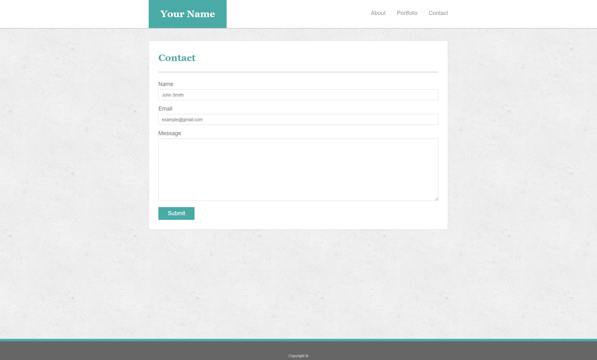

Basic Portfolio-Assignment
Overview
In this assignment, you'll build a professional portfolio site using HTML/CSS. These instructions include a short style guide; follow it to design an aesthetically pleasing layout while creating different kinds of complex HTML elements.
Before You Begin
-
Welcome to your first opportunity as a front-end web designer. You will be advocating for your most important client—yourself! By making a portfolio, you'll take your first step toward building your web development brand.
-
This will be one of your harder assignments, if only because you're just getting your feet wet in web design. Trust us, though; it will get easier. Invest your time in this assignment, and it will pay dividends!
Instructions
-
Create a new repository in GitHub called Basic-Portfolio.
-
Clone this repository to your computer using the process we went over in class.
-
Navigate to the Basic-Portfolio folder that you just cloned onto your machine. Inside this folder, create the following:
- 3 HTML documents:
index.html, contact.html and portfolio.html.
- A folder called
assets.
- Inside the assets directory, make two additional folders:
css and images.
- In the
css folder, make a file called style.css.
- In the
css folder, make a file called reset.css, and include the code found from the Meyerweb reset located here.
- In the
images folder, save the images you plan on using (like your profile image and the placeholder images for the portfolio).
-
Push the above changes to GitHub.
- Make sure to
git add . and git commit -m "initial site files". Then type git push origin main to push your changes to your GitHub repo.
-
Reference these screenshots for your site:



- IMPORTANT Your site's layout must match the designs in these screenshots. You'll find the specs for these designs below.
-
When you create a website, it's standard practice to code your HTML files before writing any CSS and to write up one HTML file before moving onto the next. Write your HTML semantically, too:
- If something is a heading, you use a heading tag.
- If something is a list, you use an unordered or ordered list tag.
- So on and so forth.
-
The content for the index.html should be unique to you.
- Write a paragraph or two about yourself. Make it fun, show your personality!
- The main logo where it says "Your Name" should say your name. This may make the logo section smaller or wider depending on how long your name is—that is fine and expected.
- Add, commit, and push your code to GitHub often, especially when you complete a page.
-
After all of your HTML is written, you can begin styling your pages using the style.css file you created.
- Be sure to validate your html.
- Consult the specs below these instructions for advice on styling your CSS files.
-
Push your changes to Github.
Additional Specifcations
-
Colors Pro-tip: Use the Eye Dropper Chrome extension to find the colors used on web pages.
- Teal color (used for headings and backgrounds):
#4aaaa5
- Regular font color (used for paragraphs and all text besides the headings):
#777777
- Main header background color:
#ffffff
- Main header border color:
#cccccc
- Footer background color:
#666666
- Main content background color:
#ffffff
- Main content border color:
#dddddd
-
Fonts:
- For heading fonts use
font-family: 'Georgia', Times, Times New Roman, serif;.
- For all other fonts use
'Arial', 'Helvetica Neue', Helvetica, sans-serif;.
-
Profile Image Found on index.html:
- Use a picture of yourself.
- If you don't have a picture, you can grab a placeholder image from LoremPicsuml. Save the images to your
images folder.
-
Portfolio Images:
- Placeholder images can be found at LoremPicsum.
- Save the images to your
images folder.
-
Background Images:
- The background pattern used was found on Subtle Patterns. You can browse through that site and find whichever pattern you like.
-
Dimensions:
- The entire content and the main section content area is
960px wide.
- Pro-tip: Use the Page Ruler extension to measure the size of elements.

Bonus
-
Make your pages more sophisticated by adding style to text links, to image links, and to buttons for when a user hovers their cursor over them. A CSS hover tutorial can be found here.
-
You can use Adobe Color to find colors that match the theme (in this case, the primary color is Teal #4aaaa5).
-
Make a "sticky footer." You will notice the dark grey footer will always rest just below the content. This is fine whenever your site has enough content to push it down past the height of most monitors. But if there isn't much content in the body, the footer could rest in the middle of the page:
- Try to code the footer in a way that it will always remain at the bottom of the page, no matter how short the content is. A sticky footer tutorial can be found here.
Helpful Hints
-
For help with Git and GitHub, be sure to consult the GitHub Supplemental Guide sent to you in class.
-
Don't forget to look into these concepts: float, padding, margin, display, overflow, clear and text-align.
-
This will be a tough assignment, but 23 weeks from now, you'll look back to this exercise and realize just how much you've grown as a developer. Stay positive! You've got this!
Minimum Requirements
Attempt to complete homework assignment as described in instructions. If unable to complete certain portions, please pseudocode these portions to describe what remains to be completed.
One More Thing
If you have any questions about this project or the material we have covered, please post them in the community channels in slack so that your fellow developers can help you! If you're still having trouble, you can come to office hours for assistance from your instructor and TAs.
Good Luck!
Additional Specifications
1. Your HTML should have each of the following sections:
- * Header
- * Nav
- * Aside (With a Heading)
- * Section (With a Heading)
- * Article (With a Heading) contained within the Section
- * Headers contained within the Article
- * Paragraph contained within the Article
2. Your CSS should have styles for each of the following elements:
- * Body
- * font-family: 'Arial', 'Helvetica Neue', Helvetica, sans-serif;
- * color: '#777'
- * background: '#777'
- * width: '960px'
- * font-size: '18px'
- * Header, Nav, Section, Aside, and Footer
- * background: '#ebebeb'
- * Article
- -* color: '#ebebeb',
- -* background: '#777'
- -* h1 and p
- -* color: '#777',
- -* background: '#ebebeb'
3. The widths of each section should be:
- * section: 495px
### Helpful Hints
- * Don't forget to review these concepts: `float`, `padding`, `margin`, `display`, `overflow`, `clear` and `text-align`.
- * This will be a tough assignment. But 23 weeks from now, you'll look back to this exercise and realize just how much you've grown as a developer. Stay positive!
- - -
### Minimum Requirements
Attempt to complete homework assignment as described in instructions. If unable to complete certain portions, please pseudocode these portions to describe what remains to be completed.
- - -
### One More Thing
If you have any questions about this project or the material we have covered, please post them in the community channels in slack so that your fellow developers can help you! If you're still having trouble, you can come to office hours for assistance from your instructor and TAs.